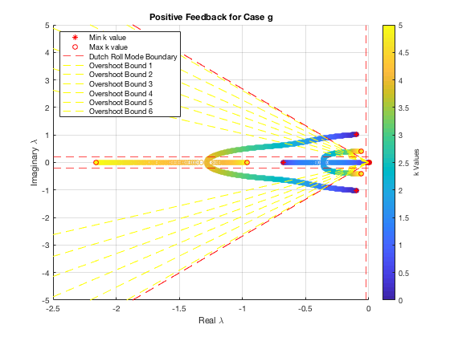
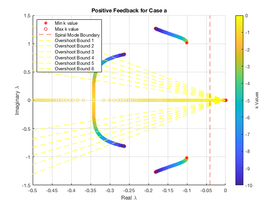
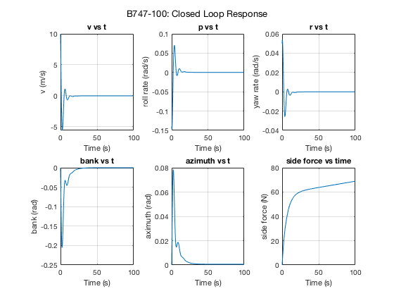
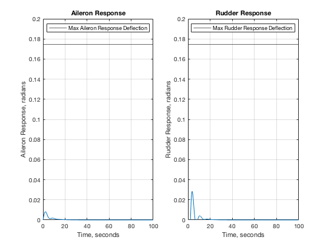
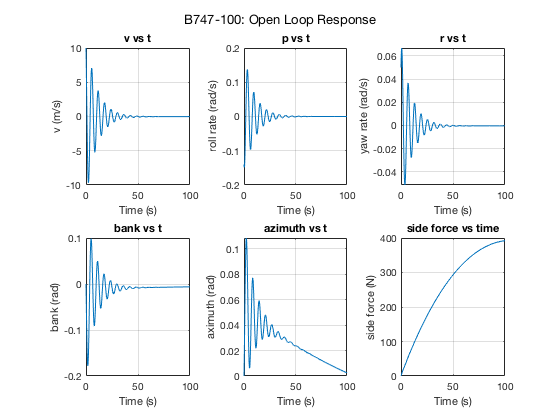

Contents
ASEN 3128 - Assignment 12 - Main
Lateral Dimensional Derivatives / B747-100 dynamics
Author: Margaux McFarland Collaborators: Date: 12/11/19
clc; clear; close all; %B-747 givens (Case II) W = 2831737.87; %N, weight g = 9.81; %N, gravity m = W/g; %kg, mass rho = 0.6530; %air density, kg/m^3 u0 = 157.886; %V=u in stability frame, airspeed, m/s S = 510; %planform area, m^2 b = 59.6433; %span, m theta0 = 0; %radians zeta = deg2rad(-6.8); %radians %moment of inertias Ix = 2.4676e7; %kg*m^2 Iy = 4.4878e7; Iz = 6.7384e7; Izx = 1.3151e6; %coefficients from table 6.7 Cyb = -0.8771; Cyp = 0; Cyr = 0; Clb = -0.2797; Clp = -0.3295; Clr = 0.304; Cnb = 0.1946; Cnp = -0.04073; Cnr = -0.2737; %dimensionalize stability derivates using table 4.5 Yv = (1/2)*rho*u0*S*Cyb; Yp = (1/4)*rho*u0*b*S*Cyp; Yr = (1/4)*rho*u0*b*S*Cyr; Lv = (1/2)*rho*u0*S*b*Clb; Lp = (1/4)*rho*u0*b^2*S*Clp; Lr = (1/4)*rho*u0*b^2*S*Clr; Nv = (1/2)*rho*u0*S*b*Cnb; Np = (1/4)*rho*u0*b^2*S*Cnp; Nr = (1/4)*rho*u0*b^2*S*Cnr; mat = [Yv Lv Nv; Yp Lp Np; Yr Lr Nr];
Problem 2
%convert to stability frame Yv_s = Yv; Yp_s = Yp*cos(zeta); Yr_s = Yr*cos(zeta) + Yp*sin(zeta); Lv_s = Lv*cos(zeta) - Nv*sin(zeta); Lp_s = Lp*cos(zeta)^2 - (Lr + Np)*sin(zeta)*cos(zeta) + Nr*sin(zeta)^2; Lr_s = Lr*cos(zeta)^2 - (Nr - Lp)*sin(zeta)*cos(zeta) - Np*sin(zeta)^2; Nv_s = Nv*cos(zeta) + Lv*sin(zeta); Np_s = Np*cos(zeta)^2 - (Nr - Lp)*sin(zeta)*cos(zeta) - Lr*sin(zeta)^2; Nr_s = Nr*cos(zeta)^2 + (Lr + Np)*sin(zeta)*cos(zeta) + Lp*sin(zeta)^2; mat2 = [Yv_s Lv_s Nv_s; Yp_s Lp_s Np_s; Yr_s Lr_s Nr_s]; Ix_s = Ix*cos(zeta)^2 + Iz*sin(zeta)^2 + Izx*sin(2*zeta); Iz_s = Ix*sin(zeta)^2 + Iz*cos(zeta)^2 - Izx*sin(2*zeta); Izx_s = -((1/2)*(Ix - Iz)*sin(2*zeta) + Izx*(sin(zeta)^2 - cos(zeta)^2)); %prime coefficients Ix_prime = (Ix_s*Iz_s - Izx_s^2)/Iz_s; Iz_prime = (Ix_s*Iz_s - Izx_s^2)/Ix_s; Izx_prime = Izx_s/(Ix_s*Iz_s - Izx_s^2); %calculate A matrix A11 = Yv_s/m; A12 = Yp_s/m; A13 = (Yr_s/m)-u0; A14 = g*cos(theta0); A21 = (Lv_s/Ix_prime)+(Izx_prime*Nv_s); A22 = (Lp_s/Ix_prime) + (Izx_prime*Np_s); A23 = (Lr_s/Ix_prime) + (Izx_prime*Nr_s); A24 = 0; A31 = (Lv_s*Izx_prime) + (Nv_s/Iz_prime); A32 = (Lp_s*Izx_prime) + (Np_s/Iz_prime); A33 = (Lr_s*Izx_prime) + (Nr_s/Iz_prime); A34 = 0; A41 = 0; A42 = 1; A43 = tan(theta0); A44 = 0; %A matrix A = [A11 A12 A13 A14;... A21 A22 A23 A24;... A31 A32 A33 A34;... A41 A42 A43 A44]; %non-dimennsional control derivatives (table 7.3) Cy_dela = 0; Cy_delr = 0.1146; Cl_dela = -1.368e-2; Cl_delr = 6.976e-3; Cn_dela = -1.973e-4; Cn_delr = -0.1257; %dimensionalize the control derivatives Y_dela = Cy_dela*(1/2)*rho*u0^2*S; Y_delr = Cy_delr*(1/2)*rho*u0^2*S; L_dela = Cl_dela*(1/2)*rho*u0^2*S*b; L_delr = Cl_delr*(1/2)*rho*u0^2*S*b; N_dela = Cn_dela*(1/2)*rho*u0^2*S*b; N_delr = Cn_delr*(1/2)*rho*u0^2*S*b; mat3 = [ Y_dela L_dela N_dela; Y_delr L_delr N_delr]; %B matrix B11 = Y_dela/m; B12 = Y_delr/m; B21 = L_dela/Ix_prime + (Izx_prime*N_dela); B22 = (L_delr/Ix_prime) + (Izx_prime*N_delr); B31 = Izx_prime*L_dela + (N_dela/Iz_prime); B32 = (Izx_prime*L_delr) + (N_delr/Iz_prime); B41 = 0; B42 = 0; B = [B11 B12; B21 B22; B31 B32; B41 B42]; %augemented matrix A_lat_aug = [A [0 0; 0 0; 0 0; 0 0]; [0 0 sec(theta0) 0 0 0; 1 0 0 0 u0*cos(theta0) 0]]; B_lat_aug = [B; 0 0; 0 0]; %pick case g from Assignment 12 % Part G k = 0:0.01:5; for i = 1:length(k) k_mat = [0 0 0 0 0 0; 0 0 k(i) 0 0 0]; A_CL = (A_lat_aug-(B_lat_aug*k_mat)); [evecs_aug1, evals_aug1] = eig(A_CL); eigens_aug7a(i,:) = diag(evals_aug1)'; end for i = 1:length(k) k_mat = [0 0 0 0 0 0; 0 0 k(i) 0 0 0]; A_CL = (A_lat_aug+(B_lat_aug*k_mat)); [evecs_aug, evals_aug] = eig(A_CL); eigens_aug7b(i,:) = diag(evals_aug)'; end %also pick case a k2 = 0:-0.01:-10; %positive feedback for i = 1:length(k2) k_mat = [0 0 0 k2(i) 0 0; 0 0 0 0 0 0]; A_CL = (A_lat_aug-(B_lat_aug*k_mat)); [evecs_aug, evals_aug] = eig(A_CL); eigens_aug1b(i,:) = diag(evals_aug)'; end
plot case g region - dutch roll mode control and rudder feedback
figure(1) %subplot(1, 2, 1) for i = 1:6 scatter(real(eigens_aug7b(:,i)),imag(eigens_aug7b(:,i)),[],k) hold on end a = plot(real(eigens_aug7b(1,:)),imag(eigens_aug7b(1,:)),'r*'); hold on b = plot(real(eigens_aug7b(end,:)),imag(eigens_aug7b(end,:)),'ro'); legend([a,b],'Min k value','Max k value','Location','NorthWest') title('Positive Feedback for Case g') xlabel('Real \lambda') ylabel('Imaginary \lambda') grid on c = colorbar; c.Label.String = 'k Values'; %display boundaries on case g to display where correct eigenvalues can %be found xlim([-2.5 0]); ylim([-5 5]); xline(-0.025,'--r','DisplayName','Dutch Roll Mode Boundary'); % max dutch roll mode based on time constant hold on %calculate eigenvalues for dutch roll mode tau_max = 40; %second, max time constant for dutch roll mode wn = 1/(tau_max*zeta); %rad/s zeta = 0.35; %min damping ratio eig_dutch_1 = -wn*zeta + sqrt((wn*zeta)^2 - wn^2); eig_dutch_2 = -wn*zeta - sqrt((wn*zeta)^2 - wn^2); yline(imag(eig_dutch_1),'--r','HandleVisibility','off'); hold on yline(imag(eig_dutch_2),'--r','HandleVisibility','off'); hold on line([0 -10*cosd(69.5)],[0 10*sind(69.5)],'Color','red','LineStyle','--','HandleVisibility','off'); hold on line([0 -10*cosd(69.5)],[0 -10*sind(69.5)],'Color','red','LineStyle','--','HandleVisibility','off'); hold on %percent overshoots po = 5:5:30; %loop through potential overshoots for i = 1:length(po) %calculate corresponding damping ratio damp_overshoot = sqrt((log(po(i)/100).^2)/(pi^2 + (log(po(i)/100)).^2)); %calculate beta beta = acos(damp_overshoot); %plot line line([0 -10*cos(beta)],[0 10*sin(beta)],'Color','yellow','LineStyle','--','DisplayName',"Overshoot Bound " + i); hold on line([0 -10*cos(beta)],[0 -10*sin(beta)],'Color','yellow','LineStyle','--','HandleVisibility','off'); hold on end
Plot for Case a - sprial/roll mode control - aileron feedback
figure(2) for i = 1:6 scatter(real(eigens_aug1b(:,i)),imag(eigens_aug1b(:,i)),[],k2) hold on end a = plot(real(eigens_aug1b(1,:)),imag(eigens_aug1b(1,:)),'r*'); hold on b = plot(real(eigens_aug1b(end,:)),imag(eigens_aug1b(end,:)),'ro'); legend([a,b],'Min k value','Max k value','Location','NorthWest') title('Positive Feedback for Case a') xlabel('Real \lambda') ylabel('Imaginary \lambda') grid on c = colorbar; c.Label.String = 'k Values'; hold on xlim([-0.5 0]); hold on xline(-0.04,'--r','DisplayName','Spiral Mode Boundary'); % max spiral mode based on time constant hold on %loop through potential overshoots for i = 1:length(po) %calculate corresponding damping ratio damp_overshoot = sqrt((log(po(i)/100).^2)/(pi^2 + (log(po(i)/100)).^2)); %calculate beta beta = acos(damp_overshoot); %plot line line([0 -10*cos(beta)],[0 10*sin(beta)],'Color','yellow','LineStyle','--','DisplayName',"Overshoot Bound " + i); hold on line([0 -10*cos(beta)],[0 -10*sin(beta)],'Color','yellow','LineStyle','--','HandleVisibility','off'); hold on end hold on
find the K values that correspond to this region
%find index for min eigenvalue in region (most negative) [row_min, col_min] = find(real(eigens_aug7b) >= -0.025, 1, 'last'); %find index for max eigenvalue in region (least negative and real) [row_max, col_max] = find(real(eigens_aug7b) == min(real(eigens_aug7b)) .* imag(eigens_aug7b) == 0, 1); %possible gain values K_possible = k(row_max:row_min)
K_possible =
Columns 1 through 7
0 0.0100 0.0200 0.0300 0.0400 0.0500 0.0600
Columns 8 through 14
0.0700 0.0800 0.0900 0.1000 0.1100 0.1200 0.1300
Columns 15 through 20
0.1400 0.1500 0.1600 0.1700 0.1800 0.1900
ode call
%max control deflections dela_max = deg2rad(10); %radians, aileron deflection delr_max = deg2rad(10); %radians, rudder deflection %gains K1 = -0.04; %gain on aileron K2 = -1.1; %gain on rudder k_mat = [0 0 0 K1 0 0; 0 0 K2 0 0 0]; %label and title strings for each state ylabel_str = ["v (m/s)","roll rate (rad/s)", "yaw rate (rad/s)","bank (rad)", "aximuth (rad)", "side force (N)"]; title_str = ["v vs t","p vs t","r vs t","bank vs t", "azimuth vs t", "side force vs time"]; %state_vec = [v; p; r; phi; psi; y]; initials = [10; -0.14;0.05;0;0;0]; t_span = [0 100]; %seconds [t, state_vec] = ode45(@(t,state_vec) g_fun(t,state_vec, A_lat_aug,B_lat_aug,k_mat),t_span,initials); %plot figure(3) sgtitle("B747-100: Closed Loop Response"); for j = 1:6 %loop through number of lateral states and plot each subplot(2, 3, j); plot(t, state_vec(:,j)); xlabel('Time (s)'); ylabel(ylabel_str(:,j)); title(title_str(:,j)); grid on hold all; end %plot rudder deflection figure(4) subplot(1,2,1); plot(t, K1.*state_vec(:,4),'HandleVisibility','off'); hold on yline(dela_max); title('Aileron Response'); legend('Max Aileron Response Deflection'); ylabel('Aileron Response, radians'); xlabel('Time, seconds'); ylim([0 0.2]); grid on subplot(1,2,2); plot(t, K2.*state_vec(:,3),'HandleVisibility','off'); hold on yline(delr_max); title('Rudder Response'); legend('Max Rudder Response Deflection'); ylabel('Rudder Response, radians'); xlabel('Time, seconds'); grid on ylim([0 0.2]); 
compare with open loop
%state_vec = [v; p; r; phi; psi; y]; initials = [10; -0.14;0.05;0;0;0]; t_span = [0 100]; %seconds [t, state_vec] = ode45(@(t,state_vec) g_fun2(t,state_vec, A_lat_aug),t_span,initials); %plot figure(5) sgtitle("B747-100: Open Loop Response"); for j = 1:6 %loop through number of lateral states and plot each subplot(2, 3, j); plot(t, state_vec(:,j)); xlabel('Time (s)'); ylabel(ylabel_str(:,j)); title(title_str(:,j)); grid on hold all; end
Functions Called
The following functions were built and called as apart of this assignment.
function ydot = g_fun(t,state_vec, A, B, K) %ode function to find the lateral states, with controls and gains %closed loop ydot = (A-(B*K))*state_vec; end
function ydot = g_fun2(t,state_vec, A) %ode function to find the lateral states, with controls and gains %open loop ydot = A*state_vec; end